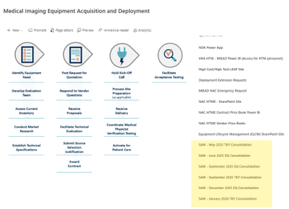
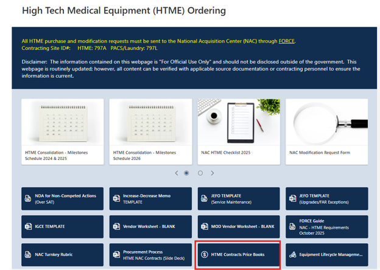
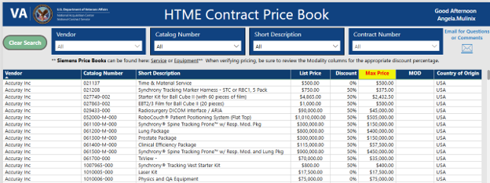

Participants will locate and navigate key NAC procurement resources (e.g., MIEAD SharePoint, NAC HTME SharePoint, FORCE Guide) to complete a set of targeted tasks.
This activity reinforces awareness of where critical tools, templates, and guidance are located and how to access them efficiently.
Instructions: Use the resources on the MIEAD and NAC SharePoint sites to complete the tasks below. Type your answers in the boxes provided, then click Show Correct Answer to check your work.
1. Where can you find the list of VISN MIEAD Leads?
7. Where can you find the posting of the formal solicitation (pre and final solicitation, including amendments)?
Correct Answer: There are two ways to find this:
Via the email that came out from NAC CO, forwarded by MIEAD workgroup to MIEAD Leads and then down to stations.
A link is posted on the MIEAD SharePoint site (home page).

8. Where do you find if a part number or item is on a NAC IDIQ contract?
Correct Answer: Check the Pricebook from the vendor, which is located on the NAC SharePoint site.


Tip: Bookmark the key SharePoint sites for quick access during your daily work. The MIEAD SharePoint home page and the NAC HTME page are your primary hubs for procurement resources.
Lab 2: Technical Specification Review Activity
Activity: Technical Specification Review Activity (Group or Individual)
Participants will review a sample technical specification containing common errors and weaknesses. Learners will identify issues related to clarity, completeness, measurability, and vendor bias, then discuss how to improve the specification to align with NAC procurement best practices and VA requirements.
Instructions: Download the PDF file located at NAC Training Example - SCANNING.pdf. Carefully review the entire document, paying special attention to sections labeled A through G. For each section, identify issues that should be improved, added, or removed. Focus on clarity, completeness, use of measurable requirements, avoidance of vendor bias, proper use of “shall/should/must”, and alignment with best practices. Type your observations and suggested improvements in the boxes provided below.
Section A
Section B
Section C
Section D
Section E
Section F
Section G
Tip: When reviewing technical specifications, always ask: “Could multiple qualified vendors respond to this requirement?” and “Can this requirement be objectively tested or verified?” If the answer is no, the requirement likely needs improvement.
Participants will work in small groups using an assigned modality (CT, X-ray, MRI, or Portable X-ray) to translate clinical needs into clear, measurable, and vendor-agnostic technical requirements. Groups will use concepts from market research, benchmarking, and the Compliance Matrix Template to guide development and will share select examples with the larger group.
Instructions: Each group will receive a requirements overview paragraph and an ECRI spreadsheet for the assigned modality. Review the assigned modality description below, identify the core clinical need, and draft measurable, vendor-neutral requirements that could be used in a procurement. Use the Compliance Matrix Template, benchmarking notes, and market research to support your work. Type your responses in the boxes provided.
MRI: This document highlights the requirements, technical specifications, and services being requested by XXX VA Medical Center toward the purchase of a replacement 1.5T Magnetic Resonance scanning system used for diagnostic MRI examinations. This MRI will be utilized for all orthopedic, vascular, abdominal, cardiac, breast, and neurological applications. It will require advanced neuro software, advanced cardiac software, and software for postprocessing of this imaging. In addition, it will require the liver lab and elastography software for abdominal imaging.
CT Scanner: The XXX VA Medical Center, Radiology Service, requests the procurement of one (1) advanced Computed Tomography (CT) scanner. The requested system is intended to support a broad range of clinical applications, including cardiovascular CT, CT angiography, neuro perfusion, dual energy imaging, CT-guided interventional procedures, and oncologic imaging. The system will serve a high-complexity veteran patient population requiring advanced diagnostic capabilities, including cardiac CT in patients with high or irregular heart rates, dual energy spectral imaging, and CT perfusion studies.
X-ray: The XXX VA Medical Center, Radiology Service, requests the procurement of one (1) digital radiographic (DR) room to support outpatient imaging services within the Radiology Department. The digital radiographic room will support a broad range of clinical procedures and imaging applications, including musculoskeletal, orthopedic, chest, abdominal, and general diagnostic radiography. Some of these procedures will be for standing scoliosis series and leg length studies.
Portable X-ray: This document highlights the requirements, technical specifications, and services being requested by XXX VA Medical Center toward the purchase of a portable radiographic unit that provides radiographic imaging in surgical, orthopedic, critical care, and emergency care procedures. The new unit will be used for imaging within the inpatient units, Emergency Department, and the Operating Rooms.
Tip: Draft requirements that are clear, measurable, and achievable by multiple qualified vendors. If a requirement cannot be tested or verified objectively, it likely needs to be rewritten before release.
Participants will review realistic vendor questions and determine appropriate responses. The group will discuss whether the response requires additional actions such as clarification or modification of the technical specifications, reinforcing the importance of accuracy and consistency during the solicitation process.
Instructions: Review each scenario below and determine whether the government response is appropriate, whether additional clarification is needed, and whether the technical specification should be revised. Use the response to evaluate how procurement questions should be handled during source selection and solicitation administration.
Draft below – updated by Jim/Angie – needs review by Kelly when she returns from leave.
PO#
Modality
Vendor Question
Government Response
XXXB67003
XR US
2c). Please confirm need for or remove navigation software requirement.
2d). Please confirm need for or remove image fusion software requirement.
5o). Please remove phantom requirement or move to value-add section.
2.c. Navigation software is a clinical requirement.
2.d. Image fusion software is not required; technical specification has been updated.
5.0. Phantom to be used for quality control testing is a clinical requirement.
XXXB67010
XR US
Please confirm if this system will be used in the ED.
Yes, this is for use in the ED.
XXXB67011
XR MAMMO
3b. Imaging type-3D: Is this high resolution imaging or standard resolution?
High resolution.
XXXB61000
NM SPECT CT
What is the clinical justification for a 128-slice CT? Would a 64-slice CT be acceptable?
VA has clinical justification for 128-slice.
XXXB61001
NM SPECT CT
Is there a dedicated room provided for the installation of the UPS? If so, please include those room dimensions and drawings.
The site prep for this equipment will be a renovation of the space to include design and construction being handled by separate contracts. We are in the process of designing the space now, so we do not have exact dimensions. Please provide the dimensions required to provide the UPS as listed in the requirements for this equipment.
XXXB60010
XR US
Image Fusion Software. Please confirm what procedures will be performed utilizing Fusion.
Do you want a biplane, triplane, or both transducers?
Do you want Transrectal (TR) or Transperineal (TP)?
Do you want stabilized or freehand?
Trans-perineal prostate biopsies will be performed utilizing fusion.
We would like biplane only per original tech specs.
Clinical staff request Transperineal only.
Clinical staff request freehand.
XXXB69022
XR PORT C ARM
Line 30, 1k. Please lower the minimum generator output power to 2.3kW for fair, open competition.
VA has a clinical need for this specification and it is offered by two or more vendors.
XXXB63008
XR US
Request item 1.j. Minimum battery life be reduced to 90 min.
Request item 1.m. Maximum equipment weight be increased to 190 lbs.
1.j – VA has a clinical need for this specification and it is offered by two or more vendors.
1.m – Tech spec will not be changed.
XXX5B5011
XR US
1.b. Can the minimum active screen size be reduced from 21.5 to 14 to increase competition?
No. Several vendors offer 21.5 inch or larger monitors, as this is the standard size for a cardiac ultrasound machine used in most hospitals. Decreasing the size to 14 inches would not be acceptable.
Correct answer should be: VA has a clinical need for this specification and it is offered by two or more vendors.
Discussion prompt: For each scenario, ask: Was the requirement valid, was the question appropriately answered, and did the response require a specification change, a clarification, or no change at all?
Participants will evaluate simplified vendor proposals using defined criteria and their assigned modality. Groups will identify weaknesses, potential bias, and determine which vendor represents the best value based on the technical requirements. Results will be briefly shared with the full group.
Instructions: Use the same modality as Lab 2b and Lab 3. Pull the Matrix Aggregator and evaluate the sample vendor proposals below. Identify strengths, weaknesses, compliance gaps, and any concerns related to realism, bias, or value. Type your evaluation in the boxes provided.
Assigned modalities: MRI, CT, general x-ray, portable x-ray
1. Modality and Proposal Summary
2. Technical Compliance Review
3. Bias or Risk Assessment
4. Best Value Recommendation
Sample Procurement Scenarios
Example ID
Modality
Scenario
660B60001
Portable
March 2026 consolidation
589B63005
MRI
March 2026
521B62001
CT Scanner
January 2026 turnkey
671B60026
RAD
March 2026
Possible role-play scenario: As time allows, groups may assume the role of a technical evaluation team and brief the class on the strengths, risks, and recommended award decision for the assigned proposal.
Participants will analyze a scenario in which a procurement effort is delayed or off track due to issues such as incomplete specifications, funding delays, or coordination breakdowns. Using knowledge from the course, groups will identify where in the process the breakdown occurred and propose corrective actions.
Instructions: The VA Hospital wants to replace a CT in Radiology. Review the scenario and identify examples of coordination breakdowns that could delay award and/or installation. Determine where the breakdown occurred in the process and explain how the situation could have been prevented.
Scenario Prompt
1. Coordination Breakdown Examples
2. Where the Breakdown Occurred
3. Corrective Actions
Example Conversation Points
Lifecycle Planning:
Funding not available to execute the package in the desired fiscal year
Purchase approvals not completed in time (equipment committee, VACO HCHT, etc.)
Technical Specifications / Technical Evaluation:
Vendor responses on matrix do not align with quote
Wireless modality requirements in spec but vendor non-compliant
Not realizing missing ancillary equipment on quotes resulting in modifications needed
Implementation:
Sizing issues not discovered until site prep begins, resulting in a modification needed
ERA processing delays
Miscommunication between HTM and clinical staff regarding downtime of equipment/room
Training delays and/or not enough training purchased
Finance/Funding Issues:
Not enough funding on equipment PO
Not enough funding on turnkey PO
PO and G-invoice modifications needed
Funding types – activations, VACO funds
Equipment modifications requiring an increase and resulting in a need for prior year funds
Prompt for discussion: Ask: Where in the process did the project become misaligned, which stakeholder(s) were involved, and what early intervention could have reduced risk?